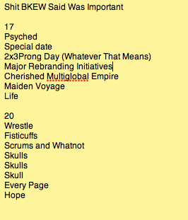

In Act 6, Andrew knew that the fanbase was particularly wise to his brand of tricks -- important numbers and words dropped surreptitiously into situations, etc -- and started laying them on thick as a means of conveying extra information to the quick-eyed. Go back to p=006017 and p=006020, and on both pages take note of the last couple sets of ALL CAPS WORDS, for some keywords hidden in them!

I’m not sure what this is getting at, but I have made a note for future reference!